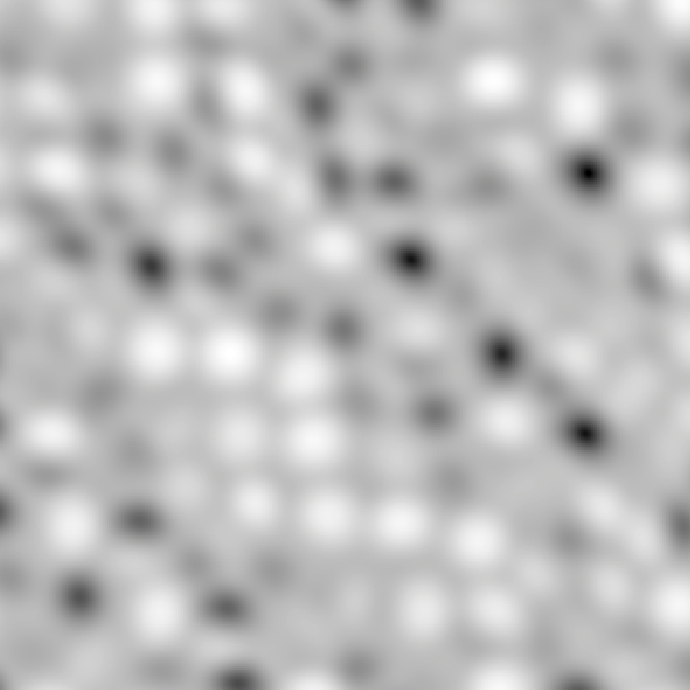

Eclipse Rendering
Aditya Baireddy, Andy Chen, Andrew Liu, Eddie Park
Abstract
Our final project was an interactive demo that renders a star with an orbiting body, with tweakable parameters like star temperature and sunspot frequency, and a free flying camera system that allows you to view things from any perspective. Our goal was to mimic realistic pictures of stars and eclipses, with realtime rendering. We added features such as noise-generated texturing with sunspots, solar corona, blackbody radiation color shifting, camera effects like bloom and lens glare, color filters for bright light (handled through HDR), and more.
Technical Approach
Most of this project followed the steps in the blog post Seeds of Andromeda in our citations. Although we started from a blank Unity project, we relied heavily on the details provided in the blog to help us generate our simulation. Although the general structure of the implementation was similar, we ended up taking some differing design choices, such as using HLSL as opposed to GLSL, as well as using the Unity rendering pipeline, and manually implementing billboarding.
The key component of our approach was Perlin noise. We mostly used HLSL shaders in our code to render both the star and the corona. To add more control over the noise, we implemented fractal noise, where we sampled several octaves of noise with varying frequencies to give different appearances of the noise.
Fractal Noise
The basic algorithm we used is as given in the snippet below:
float fractal_noise(float4 position, int octaves, float frequency, float persistence) {
// Sum of all octaves
float total = 0.0;
// Maximum possible value, used for normalization
float maxAmplitude = 0.0;
// Current noise amplitude
float amplitude = 1.0;
// Sample Perlin noise OCTAVES number of times
for(int i = 0; i < octaves; i++) {
total += snoise(position * frequency) * amplitude;
// Double the frequency
frequency *= 2;
maxAmplitude += amplitude;
// Reduce the amplitude
amplitude *= persistence;
}
return total / maxAmplitude;
}
To smoothly vary our noise textures across not just the surface of the star, but also through time, we used a 4-dimensional position vector, where the 4th coordinate denoted time. Below is a comparison of the noise shader applied to a plane with varying parameters:
| 1 Octave | 2 Octaves | 4 Octaves | 20 Octaves | |
|---|---|---|---|---|
| Frequency = 0.1 |
||||
| Frequency = 0.5 |
||||
| Frequency = 0.1 |
 |  |
||
| Frequency = 0.1 |
Star Base Texture
We then tuned the noise to get our base for the star rendering:
The exact arguments we used for this are given below:
float n = (fractal_noise(i.srcPos , 5, _Freq, 0.7) + 1.0) * 0.5;
In particular, _Freq is a user-provided uniform which we defaulted to 8. We also did a bit of extra math to generally brighten the sun a little bit, by taking a weighted average of the fractal_noise and 1.0f.
Extra Star Texture Additions
The base texture for our star has the same temperature (given as a parameter) for every point in the star, resulting in the same color (just with brightening and darkening based on fractal noise) for all points on the star. This is not very photorealistic, since photographs of the sun show some variation between red, orange, yellow, and white. This is present on both a large and small scale level. At the large scale level, it can be seen in photographs of the sun that some large chunks have a different color than surrounding areas (likely due to hotter or cooler temperatures). At the small scale level, it can be seen that there are micro variations between red/orange/yellow, and looks kind of "spotty". This was implemented in the shader by adding two types of noise: gradient noise and cellular noise.
Without any additional noise:
The negative of cellular noise was added to the temperature to simulate variations in color at a small scale level. Cellular noise is noise that resembles cells, where the visual effect is the coordinate space being partitioned into multiple "cells" which have a clear barrier on the outside, and are brighter closer to the center of the cell. The negative of this noise was added to make a faint cell structure where the boundaries are higher temperature/brighter (yellow) and the inside is lower temperature (red).
With only cellular noise on top of the base texture:
Gradient noise (scaled by an appropriate factor) was added to the temperature to simulate variations in color for large chunks. Gradient noise when scaled by an appropriate factor can be used to have shading that looks like "splatters" where there is a gradual transition between the color on the outside of the splatter to the color of the splatter. For the sun, the "splatters" were low (or high) temperatures, and produced a gradual transition between red-orange to yellow-orange, for example.
With gradient noise and cellular noise on top of the base texture:
#### Sunspots
We used the below code snippet of code to generate our sunspots.
float s = 0.3;
float t1 = snoise(sPosition * _ssFreq) - s;
float t2 = snoise((sPosition + _Radius) * _ssFreq) - s;
float ss = (max(t1, 0.0) * max(t2, 0.0)) * 2.0;
// Accumulate total noise
float total = n - ss;
This code uses more perlin noise, albeit at a lower frequency (_ssFreq denotes the sunspot frequency uniform), and subtracting this from our total to create dark spots on the surface of the star. The purpose of the t2 parameter along with the _Radius parameter was to properly adjust the sunspots based on real stars. Sunspots in stars tend to be the same size, but larger stars have more sunspots. To emulate this, we simulated more but smaller sunspots on larger stars. For images of sunspots, see the results section below.
Blackbody Radiation and Color Shifting
The noise-based rendering only gives the brightness of the light, but using some physics it's possible to compute the color of the light based on the temperature of the star. There are two components that need to be accounted for: the actual color of the blackbody radiation itself, and the change in intensity. The formula for computing blackbody radiation wavelength strength is given by
$$\displaystyle B_{\lambda }(\lambda ,T)={\frac {2hc^{2}}{\lambda ^{5}}}{\frac {1}{e^{ hc / (\lambda k_{\mathrm {B} }T)}-1}}$$
where $T$ is temperature and $\lambda$ is the desired wavelength. Computing this in real time with graphics is possible, but a little complicated with shaders because of the size of the numbers involved, and because the color gamut of the display is not necessarily known in advance, so figuring out what wavelengths exactly to use for each of the red, green, and blue LEDs is somewhat of a guessing game by the time we get to the shader. Instead, we used a texture that computed the color based on temperature in advance, and merely sampled from it based on an input temperature, which is both faster and easier.
For the intensity, we were still facing some similar shader issues as with color, so we again used a workaround: we approximated the increase in intensity for each color by some "magic" linear equations, shown below along with the total color obtained from the blackbody radiation code:
// some linear interpolation of temperature to read from the temperature texture,
// which handles between 800 K and 30,000 K
float u = (_Temp - 800.0) / 29200.0;
float4 color = tex2D(_TempTex, float2(u, 0));
// this code is refactored here to be easier to read
float colorRedShift = _Temp * (0.0534 / 255.0) - (43.0/255.0);
float colorGreenShift = _Temp * (0.0628 / 255.0) - (77.0 / 255.0);
float colorBlueShift = _Temp * (0.0735/255.0) - (115.0/255.0);
float4 tempColorShift = float4(colorRedShift,colorGreenShift,colorBlueShift,1.0);
return float4(total, total, total, 1) * shiftedColor;
_Temp is the input temperature, and total is the brightness computed by the noise functions as described earlier.
Corona Rendering
We also used fractal noise for the star's corona. The main approach was to sample the noise function based on time and the unit vector pointing from the sun to the pixel we wanted to color, and use the distance from the star to judge how bright the corona should be. (It's necessary to sample on time to make the noise actually change.) However, doing this alone doesn't create a convincing corona; it's too circular, it has lines pointing directly away from the star which looks extremely stiff and unnatural, and it flickers in and out of brightness with no rhyme or reason. In order to fix this, there were two main tricks we used to create something more similar to a real star's corona:
- We sampled from the noise function (three times, once each for x,y,z) based on the position and time to introduce a jitter to the position of the vertex. This jittered position was then normalized and used to sample again (again with time) to end up with a position jittered roughly with respect to its angle emanating outward from the sun. Finally, we used this position to calculate distance from the sun, and scaled brightness inversely to this distance to make parts of the corona closer to the sun brighter. This handles two of our problems: one, it makes the corona less circular, and two, it gets rid of the straight lines and replaces them with more smooth curves and spikes reminiscent of a real corona.
// generate jittered position by jittering each coordinate
float sx = snoise(_Freq * float4(i.srcPos.xyz, t));
float sy = snoise(_Freq * float4((i.srcPos.xyz + 2000.0), t));
float sz = snoise(_Freq * float4((i.srcPos.xyz + 4000.0), t));
float3 jitter = float3(sx,sy,sz) * 0.12;
// normalize jittered position to get a noisy angle
float3 nJitterDist = normalize(i.srcPos.xyz + jitter);
// use noisy angle to find noisy position based on angle
float3 position = i.srcPos.xyz + snoise(float4(nJitterDist, t * _Thickness)/_Thickness) * .2;
- When sampling from the noise function, instead of sampling directly based on time, we sampled based on the time minus the distance from the pixel to the star (scaled by a constant). This creates the appearance of the particles of the corona moving outward from the star (as they do in reality), as the last noise sample is only based on the angle (roughly) and time minus distance.
// i.srcPos.w just contains time, stored in position in vert shader to send to frag shader
float t = (i.srcPos.w - length(i.srcPos.xyz)) * _Speed;
Post-Processing Effects
Additionally, we also used some Unity built-in features to add post processing effects to make our rendering appear more photorealistic to solar photography. We used three main post processing features to accomplish this:
- Bloom
- Color Filtering
- Lens Flare
The bloom ended up making our corona effects more realistic by allowing the light emitted from the corona billboard to bleed a little bit over the surface of the moon, especially in the slight deviations due to the height map applied to the moon's surface.
The color filtering was applied to resemble a solar filter, as to make the star more realistic, we heavily increased the brightness of the sun. The filtering, which just decreased brightness globally allowed the features of the sun such as the surface texture to be visible, and also completely darkened the image of the moon, which in our opinion made it look like actual eclipse photography.
Finally, the lens flare effect was added mostly for fun, since a bit of lens flare makes our rendering look nice :)
Challenges
Though two of our group members had previous Unity experience, it was the other two members' first time using Unity, which was a challenging experience. In particular, writing scripts and shaders was particularly challenging, not only because they were in relatively unfamiliar languages (C# and HLSL), but also because we had to interface with Unity built-ins, of which the documentation was not very helpful at explaining how to use it. Searching for resources online often ended up with looking at long, mostly unhelpful forum threads. Many tasks that were presumed easy ended up being far more time consuming than initially planned.
One of these challenges was incorporating the fractal noise generation into our Sun rendering. Namely, while it worked to generate some noise, it did not look very good, as it was super granular and pixelated. We spent a considerable amount of time tuning the parameters and tweaking the algorithm in order to get results that we were satisfied with.
Another one of these challenges was implementing the corona shader as a billboard. While we initially tried to use pre-existing implementations of billboards, and even tried to follow an opengl tutorial, we found that it did not work for some reason. After fruitless hours of debugging, we decided to implement it ourselves, using a vertex shader to dynamically transform the coordinates of the corners of the plane in world space, such that the normal vector pointed towards the current camera position.
Rendering the moon was also a challenge, as Unity did not have a built-in displacement mapping function for objects. We tried to use third-party packages that included displacement mapping, but there were some notable issues, particularly that there was significant distortion of the textures near the poles of the sphere. Thus, we ended up writing our own displacement mapping shader using our knowledge from homework 4.
We also had trouble with getting HDR rendering to work: originally, we added HDR directly to the shaders we wrote, but this didn't play well with Unity and our implementation of color filtering, making the scene appear much darker than it should. There wasn't an easy workaround for this, since we were planning to use an in-scene translucent filter to shift down color, but at that point the pixel values were written to the screen buffer by the shader. The solution was to introduce a volume around the Sun which filtered some light out (while remaining in the HDR range), and use post-processing effects for the color filter which played nicely with the HDR rendering.
Learnings
We had a fair amount of learning moments while completing this project.
- It was far easier for us to do partner programming on one computer than to try to work separately on our own computers. We initially tried to work separately, but found that we encountered lots of unintelligible merge conflicts, and ended up having to do a bunch of work again transferring the results from one computer to another.
- Choosing the right parameters (frequency, strength, radius, temperature, size, thickness, etc.) is really important for rendering images that look good. Choosing the wrong values for these parameters can lead to results that look really weird.
- While we ended up sticking with Unity for this project, we were ultimately unhappy with the framework and felt that it would've been easier to operate in C++ by perhaps modifying one of the homework skeleton codes.
Results
Below is a static image of the initial state of our simulation, which places the camera at the right distance from the moon and the sun to resemble a total solar eclipse.

Below is an image of the sun without an eclipsing moon:
In addition, by modifying the distance between the camera and the scene, we are able to simulate an annular eclipse, and by rotating the camera around the sun, we are able to simulate a partial eclipse:
Above left: a simulation of an annular eclipse. Above right: a simulation of a partial eclipse
Below is an example of two different star temperatures, demonstrating blackbody radiation.
Above left: a simulation of a star at approximately 3200K. Above right: a simulation of a star at approximately 4500K.
And below is a video of just the sun simulation:
Moon Texture
In the main eclipse renderings, we opted to shoot for a more photorealistic result, where the camera had a solar filter which causes the moon to appear pitch black. However in this image, we manually increased the brightness of the Moon to demonstrate the texturing of the Moon. We applied a displacement map onto the moon, though due to the displacement scale, it is not immediately apparent.
Above left: the texture of the moon, with brightness manually increased. Above right: the displaced mesh of the moon.
Deliverable Video
Slides used in the presentation (berkeley dot edu account required): link
References
- Procedural Star Rendering. Benjamin Arnold, Seed of Andromeda. https://web.archive.org/web/20150910041136/https://www.seedofandromeda.com/blogs/51-procedural-star-rendering.
- 2D / 3D / 4D optimised Perlin Noise Cg/HLSL library (cginc). https://forum.unity.com/threads/2d-3d-4d-optimised-perlin-noise-cg-hlsl-library-cginc.218372/.
- What color is a blackbody? Mitchell Charity. http://www.vendian.org/mncharity/dir3/blackbody/.
- CGI Moon Kit. Ernie Wright, Nasa's Scientific Visualization Studio. https://svs.gsfc.nasa.gov/cgi-bin/details.cgi?aid=4720.
- Billboards. OpenGL-Tutorial. https://www.opengl-tutorial.org/intermediate-tutorials/billboards-particles/billboards/
Contributions from each team member
Aditya worked on setting up the interactive freecam camera system, blackbody radiation shading, and the corona billboard. Andrew worked on setting up the framework, generating the perlin and fractal noise, adding sunspots, and updating the camera system to have controllable speed and orbit mode. Andy worked on adding cellular noise and granules to the sun. Eddie worked on rendering the moon textures displacement, and improving the camera system quality of life. We all contributed to the website, report, and video.